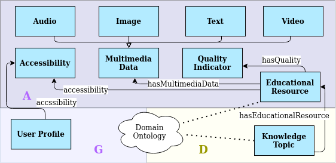
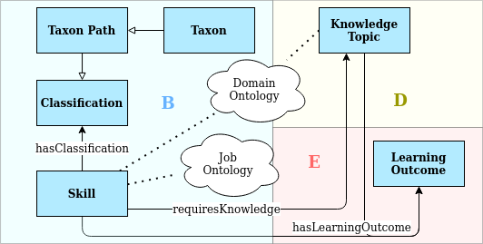
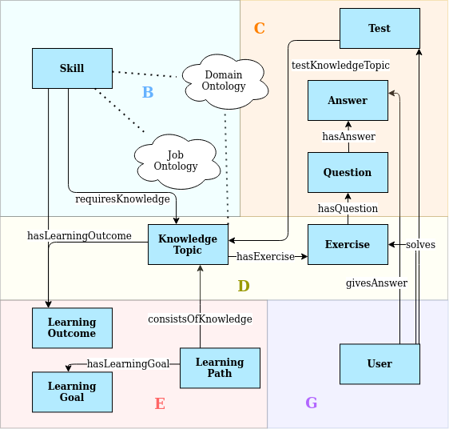
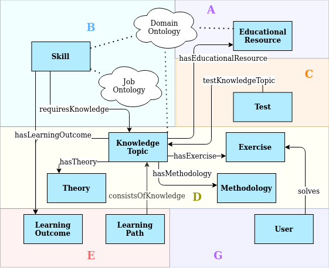
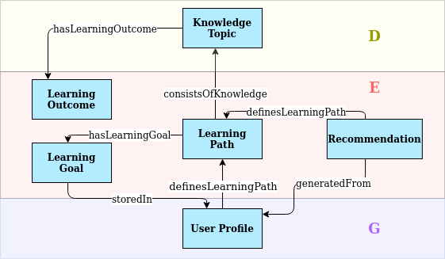
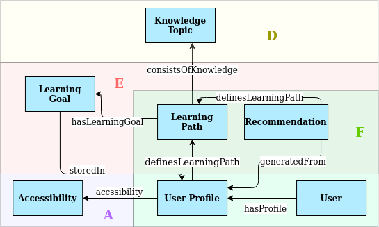
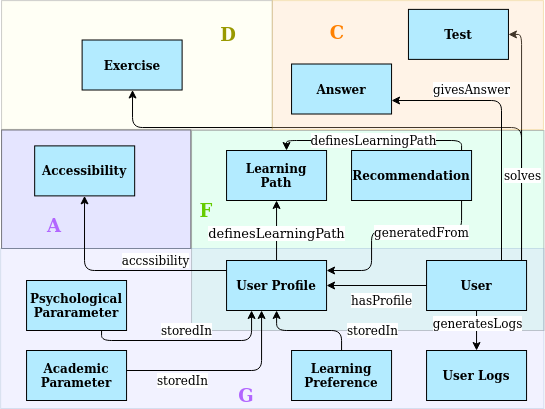

EduCOR Patterns
Educational Resource
This pattern represents the actual educational materials used to learn a specific Knowledge Topic (pattern D). Educational resources in EduCOR are described with three main classes and several data-type properties. An educational resource has one or more Quality Indicators. Each indicator can measure the quality of a specific feature of the educational resource. For example, a video educational resource can have a quality value of its content and another quality value for its resolution. Educational resources also have different Multimedia Types, including the most common four classes (Video, Audio, Image, Text). The educational resource can be accessed in different methods by different users. Therefore, the Accessibility class in this pattern is used to represent: 1) the accessibility needs of a certain user. For example, the font size requirements of a user with visual impairment. 2) the access rights of different users. This can be the case of an OER repository that allows accessing advanced materials for users who finished the basic ones, for instance. The Accessibility class is directly related to the User Profile (pattern G) for personalizing the user's access to educational resources.
Skill
The skill pattern is the direct connection, which EduCOR offers the user to the job market. It represents job skills that the user gains from learning the Knowledge Topics (pattern D). Therefore, a connection is drawn in EduCOR between the Skill class and Job Ontologies, to provide relevant concepts from the job market. It is also connected to the Domain Ontology, representing the domain concepts, e.g. unique skill-sets for a certain domain. Following the Learning object metadata LOM model, each Skill has a classification, whose taxons can be traced back through their paths. We adopt this model to represent skills with different content or hierarchical order. The difference between skills might not be clear from the name, but rather the Learning Outcome of this skill, i.e. the actual use of the skill or skill-set. Therefore, the Skills class has a direct connection to the Learning Outcome class in Pattern E.
Test
Test class in EduCOR is provided to cover the assessment tasks of Knowledge Topics (pattern D). A test is offered to the user (pattern G) in the form of one or more Questions. The user solves the Test by providing Answers to its Questions. Moreover, Questions and Answers can be framed in an Exercise class (pattern C) to group or categorise the tasks in one Test.
Knowledge Topic
The Knowledge Topic class lies at the centre of EduCOR ontology. It represents the topics that users require to learn to gain a particular skill. It logically links the majority of other patterns in EduCOR together. Each Knowledge Topic has Educational Resources (pattern A) that are used to learn the topic. The Knowledge Topic is also the foundation of gaining a job Skill (pattern B). Learning a Knowledge Topic can follow a specific Methodology, which defines how a user received the information in this topic. It can also have a unique Theory as a foundation of the topic. The Knowledge Topic is supported by Tests and Exercises, which are meant to provide the user with the ability to assess and practice the tropic. This links the Knowledge Topic to the Test class in pattern C. Similarly to the Skill class, the Knowledge Topic has a unique Learning Outcome (pattern E). Since a complex Skill might require multiple Knowledge Topics to gain it, those topics can then be arranged in a sequence represented by the Learning Path class (pattern E).
Learning Path
We introduce the Learning Path pattern in EduCOR to address two issues: 1) the complexity of some Skills, which require multiple Knowledge Topics to cover it, and 2) the learning history of a particular user, which may have implications on the recommended Knowledge Topics in the future. This is why the Learning Path and Recommendation patterns (patterns E and F, respectively) intersect in EduCOR. Each Learning Path has a final Learning Goal, which is usually the last step of the path. A Learning Path also has one or more Learning Outcomes, which are achieved through all the Knowledge Topics that compose the Learning Path. Since the Learning Path has a strong personal nature, patterns E and G (Learning Path the User Profile respectively) are significantly connected. This is to match the Learning Goals of the user with the ones that a Learning Path achieves. The User Profile also provides the needed information to personalize the learning path itself and stores the previous Learning Paths that the user followed.
Recommendation
The recommendation class in EduCOR is designed to provide OER hosting repositories and educational platforms to generate learning recommendations for their users. The Recommendation is personalized to the user’s needs based on their User Profile (pattern G). It defines an element in the Learning Path (pattern E). Therefore, by generating a sequence of Knowledge Topic recommendations, a full Learning Path is defined and personalized for each user. The definition of the Recommendation class in EduCOR allows for expanding the definition of the recommended element. In other words, a recommendation does not have to be a Knowledge Topic, but also a Test or an Exercise, when needed. This allows for more flexibility in implementing EduCOR in multiple domains.
User Profile
EduCOR is developed as a user-centric ontology that gives personalization great importance. The User Profile pattern is designed to reflect this focus by introducing a variety of classes to cover the user information that influences the learning. Those classes include the user’s Learning Goals, Learning Preferences, Accessibility requirements, Academic Parameters, and Psychological Parameters. EduCOR takes into consideration the effect of the psychological factors on the learning process. Therefore, the Psychological Parameter class is introduced to account for the user’s state of mind and reflect it on the learning recommendations. Academic Parameters class plays the same role for the academic performance information that the user achieved during their learning. Accessibility Class (pattern A) is meant to reflect the user access requirements as well as access rights of the Educational Resources. To support those classes, a history of the user’s learning actions is stored in the User Logs class. This way, the recommendation is generated based on three levels of information: the user Learning Goals, Learning requirements and preferences, and the past learning history.